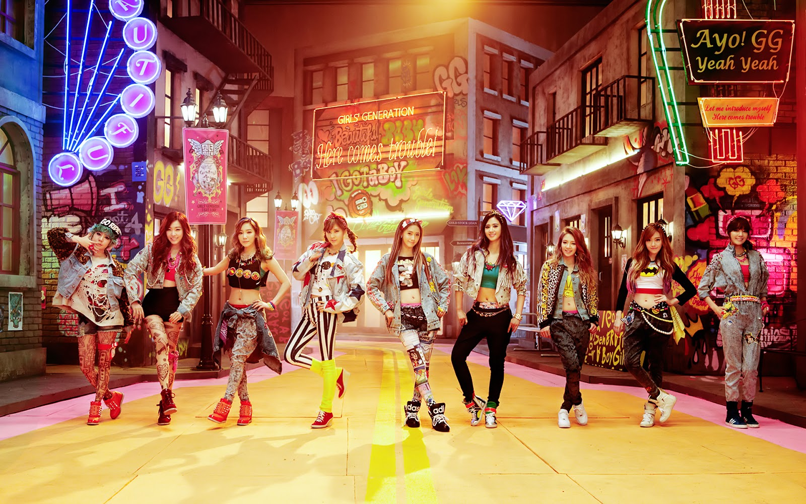

Girls' Generation

I Got A Boy
Romanized
[Sooyoung] Ayo! GG! Yeah yeah sijakhae bolkka?
[All] O-mo! [Sooyoung] Yae jom bwara yae
Museun iri isseotgillae meoril jallatdae? Eung?
[All] O-mo! [Yuri] Tto yae jom borago!
Meoributeo balkkeutkkaji seutairi bakkwieosseo
Wae geuraetdae? Gunggeumhae jukgenne
Wae geuraetdae? Malhae bwabwa jom
[Tiffany] Ha ha ha ha! Hey let me introduce myself!
Here comes trouble! Ttara hae!
[All] Oh ohh eh oh
[Taeyeon] Eh eh eh eh
[All] Ohh eh ohh~
[Jessica] Neo jallasseo jeongmal!
[Taeyeon] Jiga mwonde? Utgyeo
Neomu kotdae sen geo ani? Nabogo pyeongbeom hadanda yae
[All] Uh~
[Jessica] Geu namja wanjeon mame deureonna bwa!
[Taeyeon] Maldo andwae! Maldo andwae!
[Seohyun] Neomu yeppeojigo sexy-hae jyeosseo
Geu namja ttaemuniji?
Mureobol ppeon haetdanikka? Neo bakkun hwajangpumi mwonji
[Sunny] Sasil na, cheoeum bwasseo
Sangcheo ibeun yasu gateun gipeun nun
[Jessica] Yaegiman haedo eojil haetdanikka?
[Yuri/Sooyoung] Neo jallasseo jeongmal! Jallasseo jeongmal!
[All] Oh. Ohh eh oh
([Tiffany] Here comes trouble, hey girl listen!)
[All] Ohh eh ohh~
[Taeyeon] Neo jallatda jeongmal! ([Seohyun] jallasseo)
[All] Oh. Ohh eh oh ([Taeyeon] Hey!)
[All] Ohh eh ohh~ ([Jessica] Na na na na hey!)
[Sunny] Neo jallasseo jeongmal!
[Tiffany] Ayo! Stop! Let me put it down another way
[All] I got a boy meotjin! I got a boy chakhan!
I got a boy handsome boy nae mam da gajyeogan
I got a boy meotjin! I got a boy chakhan!
I got a boy awesome boy wanjeon banhaenna bwa
[Taeyeon] A nae wangjanim!
Eonje i momeul guhareo wa jusil tengayo?
[Sunny] Hayan kkumcheoreom
Nal pume ana ollyeo naraga jusigetjyo?
[Yoona] Na, kkamjjak! Menbungiya!
Geu sarameun nae min nachi gunggeum hadae
Wanjeon mame deureo
Mot igin cheok boyeojwodo gwaenchanheulkka?
[Hyoyeon] Oh! Jeoldaero andwae-ji! [Yoona] Geuchi? Geuchi?
[Hyoyeon] Uri, jikil geon jikija! [Yoona] Matji! Matji!
[Hyoyeon] Geuui mameul modu gajil ttaekkaji
Igeon jeoldaero ijeobeoriji mallago!
[All] Oh. Ohh eh oh. Ohh eh oh
[Yuri] Bameul saedo mojara da da
[All] Oh. Ohh eh oh. Ohh eh oh
[Sooyoung] Uri choego gwansimsa da da
[Seohyun] Nae mal deureobwa geu ai neone alji?
Jom eorijiman sogeun kkwak chasseo
[Tiffany] Eotteol ttaen oppacheoreom deumji khajiman
Aegyoreul buril ttaen neomu yeppeo jukgesseo
[All] Oh. Ohh eh oh. Ohh eh ohh~
[Yoona] Neo michyeosseo, michyeosseo
[All] Oh. Ohh eh oh. Ohh eh ohh~
[Hyoyeon] Neo michyeosseo, michyeosseo
[Tiffany] Nan jeongmal hwaga na jukgesseo
Nae namjan nal yeojaro anboneun geol
[Taeyeon] Magyeonhal ttaen eotteokhamyeon naega jokenni?
Jilturado nage haebolkka? Soksanghae! Eotteokhae! Na?
[Yuri/Sooyoung] Maldo an dwae! Maldo an dwae!
[Jessica] Don’t stop! Let’s bring it back to 140
[All] I got a boy meotjin! I got a boy chakhan!
I got a boy handsome boy nae mam da gajyeogan
I got a boy meotjin! I got a boy chakhan!
I got a boy awesome boy wanjeon banhaenna bwa
[Jessica] Eonjena nae gyeoten naepyeoni dwaejugo
Gwi giullyeojuneun
[Seohyun] Neo oh oh oh oh~ neo oh oh oh oh~
Nan idaero jigeum haengbokhae [Yoona/Hyoyeon] Jal doel geonikka
[All] I got a boy meotjin! I got a boy chakhan!
I got a boy handsome boy nae mam da gajyeogan
I got a boy meotjin! I got a boy chakhan!
I got a boy awesome boy wanjeon banhaenna bwa
([Taeyeon] A nae wangjanim!
Eonje i momeul guhareo wa jusil tengayo?
[Sunny] Hayan kkumcheoreom
Nal pume ana ollyeo naraga jusigetjyo?)
[All] I got a boy meotjin! I got a boy chakhan!
I got a boy handsome boy nae mam da gajyeogan
I got a boy meotjin! I got a boy chakhan!
I got a boy awesome boy wanjeon banhaenna bwa
([All] Oh. Ohh eh oh. Ohh eh oh
Oh. Ohh eh oh. Ohh eh oh)
[All] I got a boy meotjin!
For more kpop lyrics
Mr Mr
Rookie
4 Walls
Sing along with kpop!